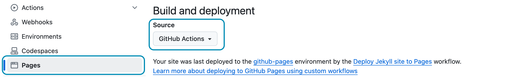

Deploy
This chapter was added in 2024 with my recommendations on how to deploy Hydejack based on recent developments in GitHub Pages and other changes in the world of static site deployment.
Note that the Jekyll Documentation on Deployment remains the best, most up-to-date resource for all things Jekyll deployment. These docs are my personal recipes with some extra steps that are mostly relevant to PRO Customers.
GitHub Actions
You can deploy to GitHub Pages from a custom GitHub Action. It allows you to fully customize the build pipeline, set specific versions for Ruby and Jekyll and use any Jekyll plugin you may wish.
To opt into the GitHub Actions pipelines, go to the repository’s settings, find the Pages tab and ensure that the Source to “GitHub Actions”:

Ensure these settings are set to opt in the GitHub Actions pipeline.
As with the legacy GitHub Pages pipeline, deployments are triggered by pushing commits to a specific branch.
To set up the pipeline, create a YAML file in .github/workflows in the root of your repository with the following content:
# file: ".github/workflows/jekyll.yml"
# Sample workflow for building and deploying a Jekyll site to GitHub Pages
name: Deploy Jekyll site to Pages
on:
# Runs on pushes targeting the default branch
push:
branches: [$default-branch] # You can change this to a specific branch (without the `$`)
# Allows you to run this workflow manually from the Actions tab
workflow_dispatch:
# Sets permissions of the GITHUB_TOKEN to allow deployment to GitHub Pages
permissions:
contents: read
pages: write
id-token: write
# Allow only one concurrent deployment, skipping runs queued between the run in-progress and latest queued.
# However, do NOT cancel in-progress runs as we want to allow these production deployments to complete.
concurrency:
group: "pages"
cancel-in-progress: false
jobs:
# Build job
build:
runs-on: ubuntu-latest
steps:
- name: Checkout
uses: actions/checkout@v4
with:
fetch-depth: 0 # Fetch whole history for jekyll-last-modified-at plugin
- name: Setup Ruby
uses: ruby/setup-ruby@8575951200e472d5f2d95c625da0c7bec8217c42 # v1.161.0
with:
ruby-version: '3.1' # Not needed with a .ruby-version file
bundler-cache: true # runs 'bundle install' and caches installed gems automatically
cache-version: 0 # Increment this number if you need to re-download cached gems
- name: Setup Pages
id: pages
uses: actions/configure-pages@v5
- name: Build with Jekyll
# Outputs to the './_site' directory by default
run: bundle exec jekyll build --baseurl "${{ steps.pages.outputs.base_path }}"
env:
JEKYLL_ENV: production
- name: Upload artifact
# Automatically uploads an artifact from the './_site' directory by default
uses: actions/upload-pages-artifact@v3
# Deployment job
deploy:
environment:
name: github-pages
url: ${{ steps.deployment.outputs.page_url }}
runs-on: ubuntu-latest
needs: build
steps:
- name: Deploy to GitHub Pages
id: deployment
uses: actions/deploy-pages@v4
This example is based on actions/starter-workflows repository
with one Hydejack-specific change applied:
The checkout step has been modified to pull the entire history of the repository.
This allows the jekyll-last-modified-at plugin to generate accurate dates based on git history.
with:
fetch-depth: 0 # Fetch whole history for jekyll-last-modified-at plugin
This GitHub Action works with any Install of Hydejack that also runs on your local machine.
Private Repo for PRO Customers
If you’re a PRO Customer and followed the instructions during Install to add the theme as a git dependency, your deploy pipeline must be authorized to pull from the private hydejack-pro repository.
# file: `Gemfile`
gem "jekyll-theme-hydejack", git: "https://github.com/hydecorp/hydejack-pro", tag: "pro/v9.2.1"
Make sure you are member of the “PRO Customers” team on GitHub. If you’ve provided a GitHub handle during checkout you should have been automatically added, otherwise you can request an invite via mail@hydejack.com.
In order for Bundle to fetch the private repository, an environment variable named BUNDLE_GITHUB__COM must be set to x-access-token:<GH_REPO_PAT>, where you replace <GH_REPO_PAT> with a
GitHub Personal Access Token (PAT) that has the “repo” permission.
If using a git dependency works for you, you can declutter your repository by deleting the #jekyll-theme-hydejack folder.
Most CI providers have a settings page that allows you can set environment variables. In the case of the GitHub Action above, the BUNDLE_GITHUB__COM variable is required during the “Setup Ruby” step. The modified step looks as follows:
- name: Setup Ruby
uses: ruby/setup-ruby@8575951200e472d5f2d95c625da0c7bec8217c42 # v1.161.0
with:
ruby-version: '3.1' # Not needed with a .ruby-version file
bundler-cache: true # runs 'bundle install' and caches installed gems automatically
cache-version: 0 # Increment this number if you need to re-download cached gems
env: #!!
BUNDLE_GITHUB__COM: x-access-token:${{ secrets.GH_REPO_PAT }} #!!